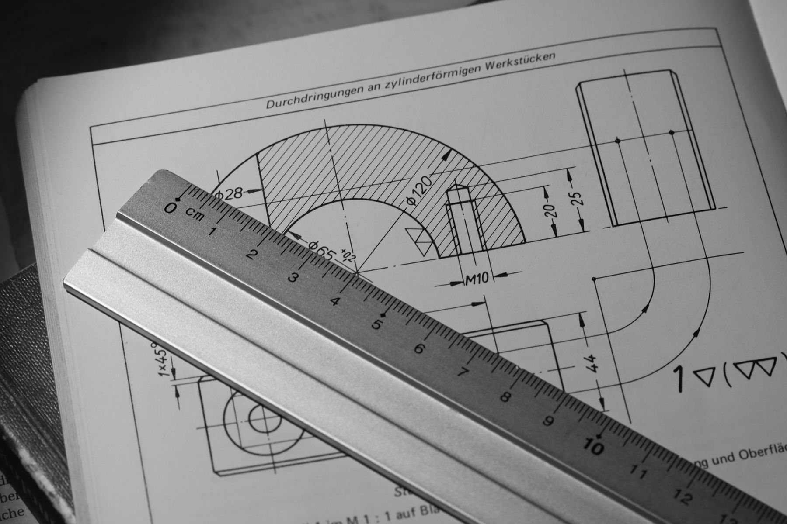
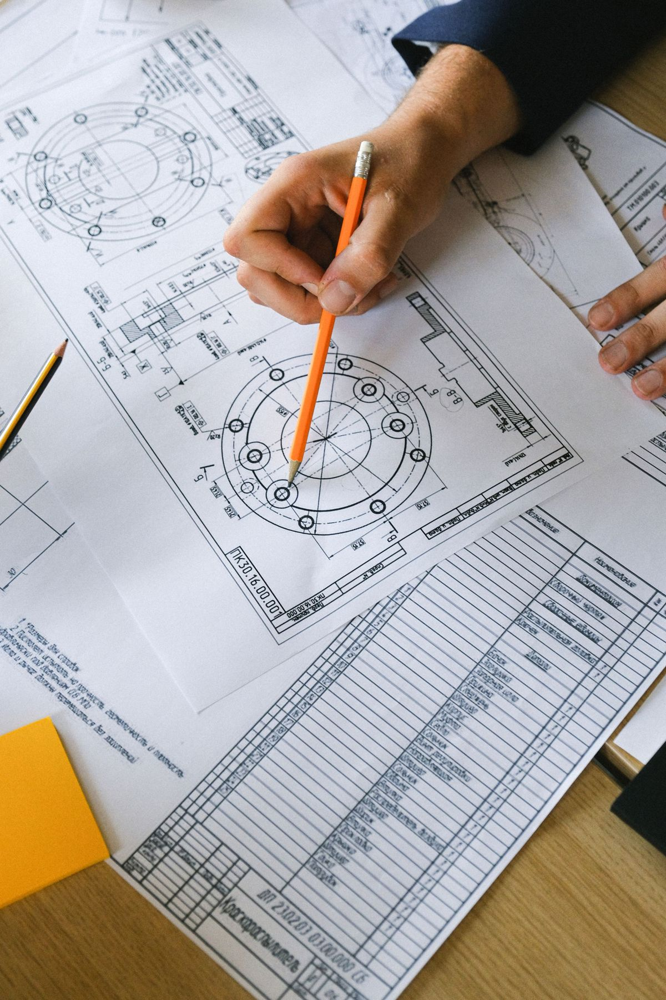
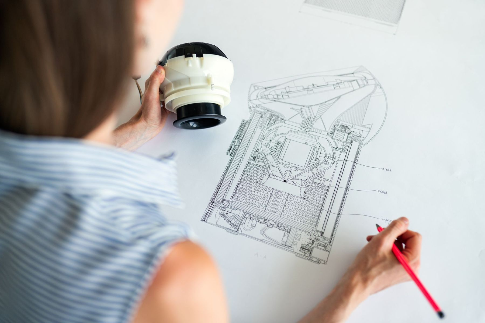

Wenn es für das Problem noch keine Lösung gibt.
Wir analysieren das Problem vor Ort unter Wasser, entwickeln eine technische Lösung, lassen sie fertigen und bauen sie selbst ein. Alles aus einer Hand.
Wer taucht, sieht das Problem. Wer konstruiert, löst es.
Viele Aufgaben unter Wasser lassen sich nicht mit Standardteilen lösen: Eine Sonde muss an einer schwer zugänglichen Stelle befestigt werden, eine Leitung braucht eine neue Halterung, ein Einlauf verstopft immer wieder.
Normalerweise sind daran mehrere Firmen beteiligt, und Informationen gehen zwischen Taucher, Planer und Hersteller verloren. Bei uns ist die Person, die den Zustand unter Wasser aufnimmt, dieselbe, die die Lösung konstruiert und später montiert. Das spart Schnittstellen, Zeit und Fehler.
Grundlage ist die Ausbildung als Konstrukteur und die praktische Erfahrung unter Wasser. Für Fertigung, Statik oder spezielle Fachfragen arbeiten wir mit spezialisierten Partnern zusammen.

Wobei wir Sie unterstützen
Problemanalyse
Aufnahme vor Ort, Ursachen klären, Rahmenbedingungen wie Tiefe, Strömung, Material und Zugang festhalten.
Konzept und Varianten
Lösungsvarianten mit Vor- und Nachteilen, Kostenschätzung und Empfehlung als Entscheidungsgrundlage.
Konstruktion
3D-Konstruktion und Fertigungszeichnungen für Halterungen, Vorrichtungen, Abdeckungen und Sonderteile.
Entwicklung von Hilfsmitteln
Spezialwerkzeug und Vorrichtungen, die Arbeiten unter Wasser sicherer, schneller und reproduzierbar machen.
Fertigung durch Partner
Beschaffung und Fertigung über bewährte Werkstätten, abgestimmt auf die Bedingungen unter Wasser.
Montage und Erprobung
Einbau durch den eigenen Taucher, Funktionskontrolle und Dokumentation des eingebauten Zustands.

Konstruiert von dem, der es unter Wasser einbaut.
Weniger Schnittstellen zwischen Taucher, Planer und Hersteller bedeuten weniger Fehler und kürzere Wege.
Typische Aufgabenstellungen
So sehen Anfragen aus, bei denen Engineering und Tauchen zusammenkommen.
- Messtechnik im SeeHalterung für Sonden und Datenlogger, die Wellen, Strömung und Bewuchs standhält und für Wartung zugänglich bleibt.
- LeitungenNeue Befestigungen oder Beschwerungen für eine freiliegende oder verschobene Leitung.
- EinlaufbauwerkeAnpassung von Rechen, Sieben oder Abdeckungen gegen wiederkehrende Verstopfung und Muschelbewuchs.
- RevisionenVorrichtungen zum Absperren oder Abdichten, damit Revisionen ohne Trockenlegung möglich sind.
- SonderanfertigungenEinzelteile für Bäder, Häfen und Anlagen, die es nicht ab Katalog gibt.
Problem schildern
Beschreiben Sie, was nicht funktioniert. Wir sagen Ihnen, wie wir vorgehen würden.